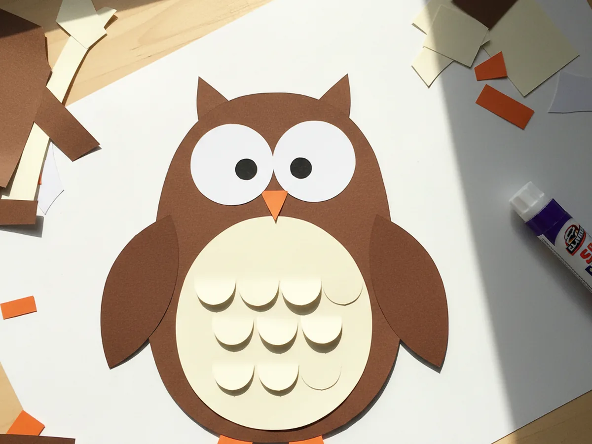
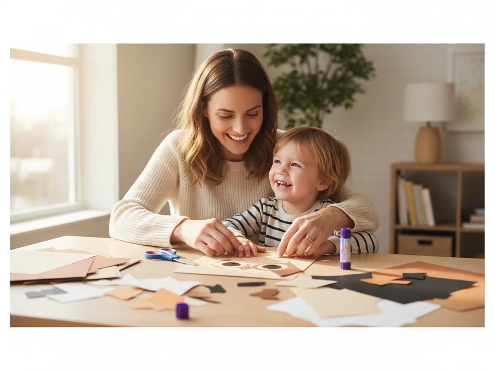
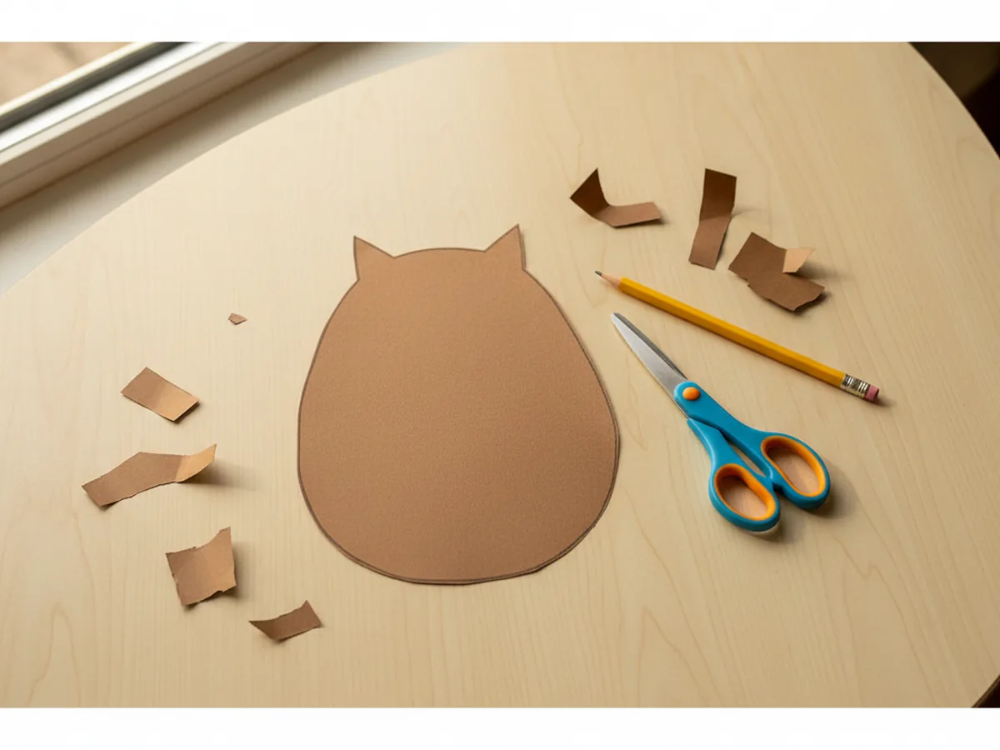
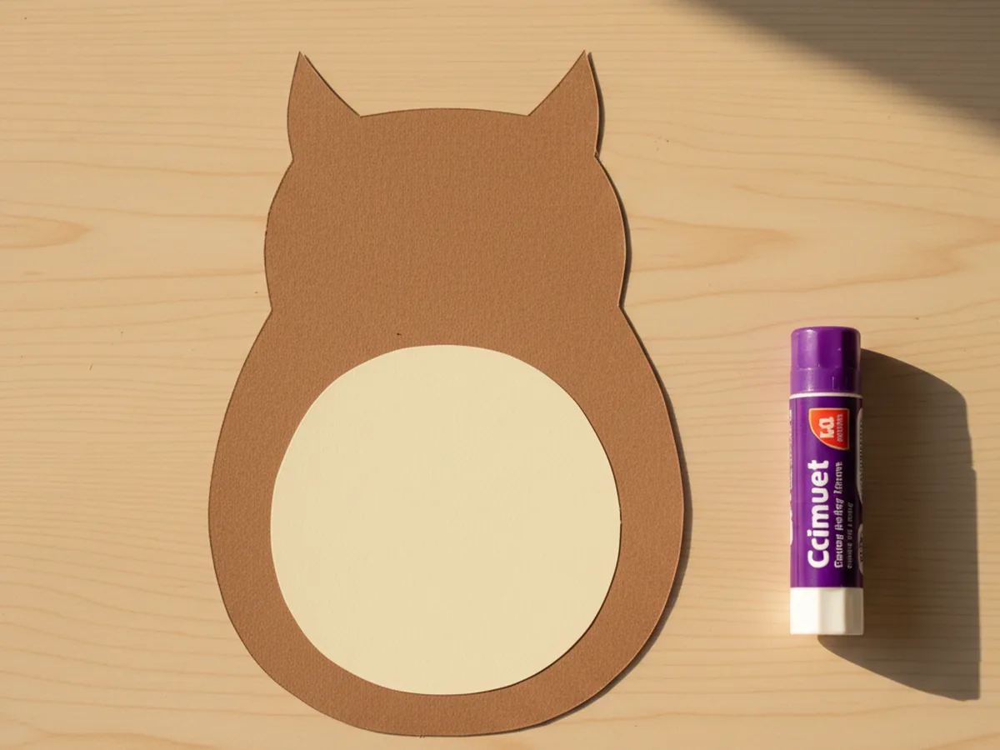
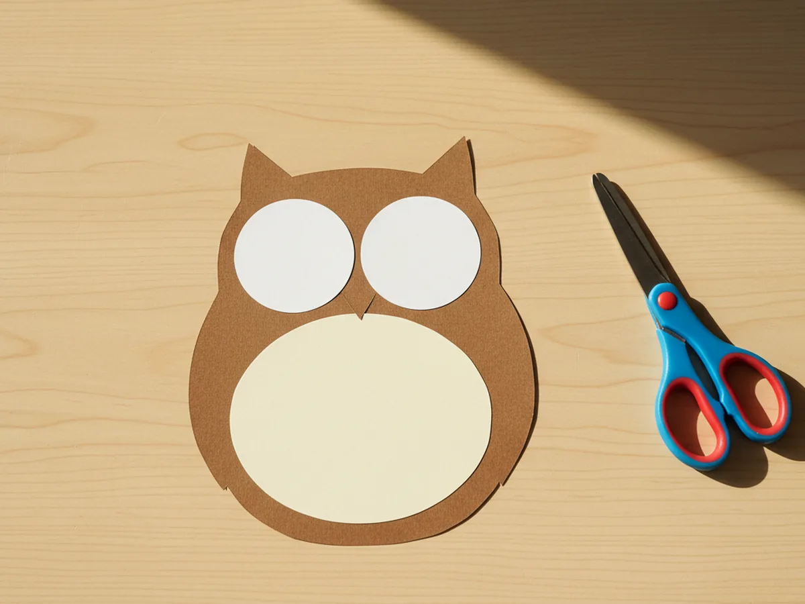
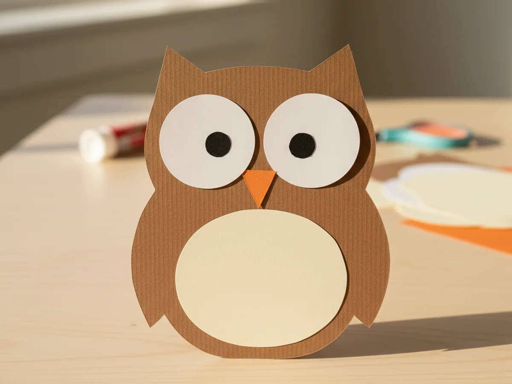
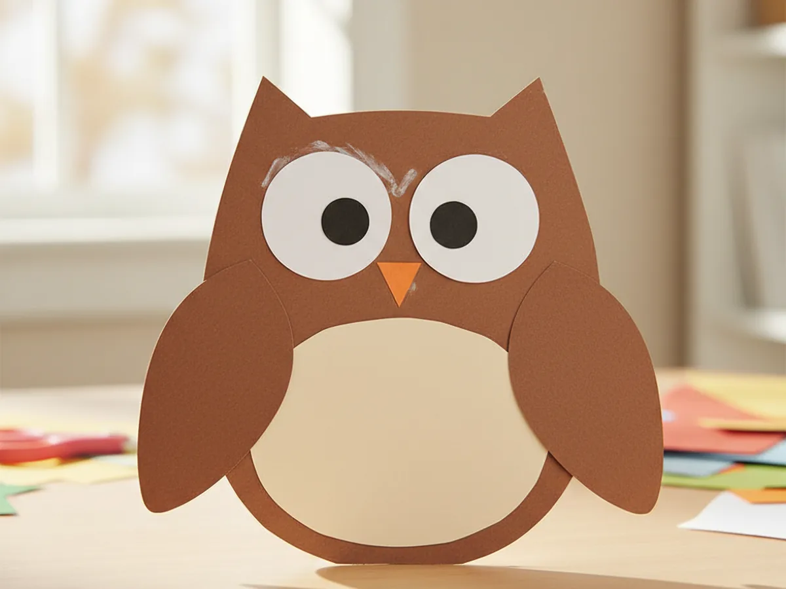
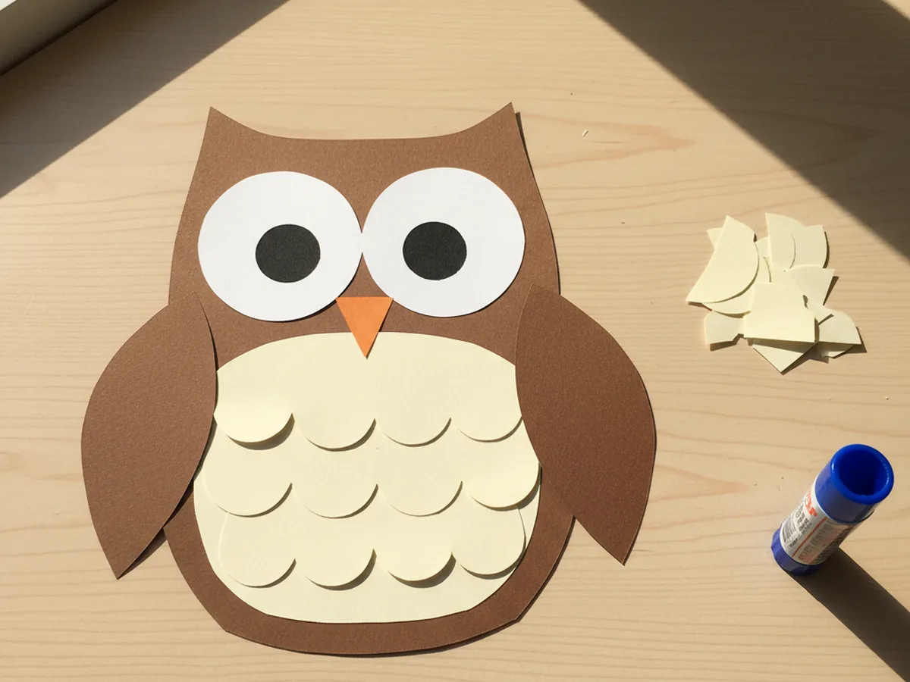
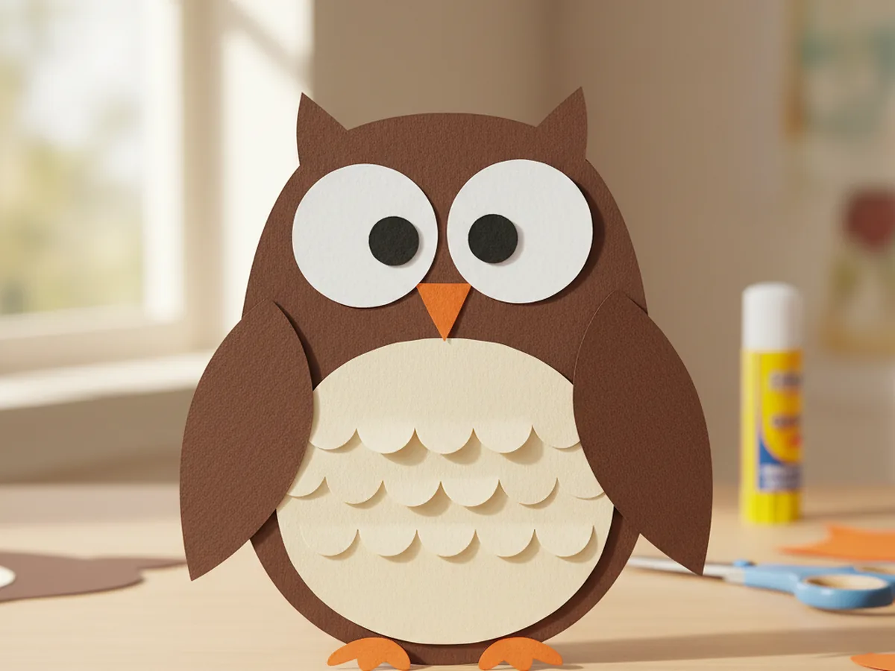

If your little one has been asking about owls lately, or you just love that big-eyed, fluffy-feathered look, this is a craft your child is going to adore. This simple owl paper craft uses just a few pieces of construction paper to make the sweetest little woodland friend, with round eyes, a tiny triangle beak, and softly layered chest feathers. 🦉
The whole project takes about 30 minutes from start to finish, including all the cutting, gluing, and the magical moment when your child adds the eyes and the owl finally looks back at them. The mess is very low, the supplies are easy to find, and every step is gentle enough for little hands. Pull out your construction paper and let's make a sweet paper owl together.
Why Kids Love This Craft
There is something almost instantly delightful about owls for young children. They have those huge round eyes, soft rounded bodies, and a quiet woodland charm that feels storybook-special. This owl paper craft taps right into that feeling, letting your child build their own friendly owl from simple paper shapes and watch its personality appear piece by piece.
Each step is easy enough for even a three-year-old to join in. Cutting rounded body shapes, sticking on big white eyes, gluing the little orange beak, and layering scalloped feathers across the tummy all give little hands plenty of low-pressure fine motor practice. Because the project is forgiving (a slightly wonky owl just looks more charming and handmade), nobody ever feels like they are getting it wrong.
Once the paper owl craft is finished, the storytelling usually starts on its own. Kids name their owl, decide which tree it lives in, and send it on quiet nighttime adventures across the kitchen table. That natural slide from craft time into pretend play is one of the loveliest parts of this project, and it keeps little minds happily busy long after the glue has dried. ✨

What You'll Need
Everything for this owl paper craft can come from a basic craft drawer. Here is the full list of supplies.
- Crayola Construction Paper (240 sheets, assorted colors), you will mainly need brown, cream or tan, white, black, and orange.
- Elmer's Washable Glue Sticks (6 count), a glue stick is cleaner than liquid glue and just as strong for layered paper shapes.
- Fiskars 5" Blunt-Tip Kids Scissors, safe and easy for little hands to manage every cut.
- Upins Self-Adhesive Googly Eyes (1000 count), optional, but the peel-and-stick kind makes the owl's face come alive in seconds.
- Crayola Broad Line Washable Markers (12 count), for adding small details and any extra feather lines.
- Pencil, for lightly sketching the body shape and feathers before cutting.
Step-by-Step Instructions
Take your time with each step and let your child help wherever they can. The owl paper craft comes together piece by piece, and each new shape adds another little "aww, look!" moment.
Step 1: Cut the Owl Body Shape
Start with a sheet of brown construction paper laid in portrait orientation. Lightly sketch a tall rounded body that looks a bit like a soft egg, with two small pointed ear tufts at the top. Aim for a body about the height of your hand from wrist to fingertip. Once the shape looks right, cut it out together. The curves do not need to be perfect, a slightly lopsided owl just looks friendlier.

Step 2: Add the Cream Tummy Panel
Now let's give the owl its soft little belly. From a sheet of cream or tan construction paper, cut a smaller rounded oval that fits comfortably inside the brown body, leaving a brown border all the way around. Spread glue on the back of the cream oval and press it onto the front of the brown body, centered just below the ear tufts. This light tummy panel is what makes the owl look fluffy and friendly instead of flat.

Step 3: Cut Two Big White Eyes
This is the part most kids cannot wait for. From white construction paper, cut two large circles, each about the size of a small cookie. They should look almost cartoonishly big compared to the body, because that is exactly what gives an owl its sweet, surprised expression. Glue them side by side near the top of the brown body, just below the ear tufts, slightly overlapping the cream tummy panel. Your paper owl already has a face peeking through.

Step 4: Add Pupils and the Beak
Here comes the moment every kid waits for. Cut two smaller black paper circles for pupils and glue one in the center of each white eye, or peel and stick a googly eye onto each white circle if you prefer. Then cut a small orange triangle for the beak and glue it pointing downward, right between and slightly below the eyes. Suddenly your owl paper craft has a personality, and most kids will gasp a little at this exact moment. 💛

Step 5: Cut and Glue the Side Wings
Every owl needs little wings, and these ones are wonderfully simple. From the leftover brown paper, cut two matching teardrop wing shapes, each about half the height of the body. Glue them along the sides of the brown body so they curve gently inward, like the owl is hugging itself. The wings should sit slightly below the eyes and overlap the body just a little. Your paper owl craft is officially starting to feel three-dimensional.

Step 6: Layer Scalloped Tummy Feathers
This step is where the owl really starts to look fluffy. From cream or tan paper, cut three thin strips a little narrower than the tummy panel. Along one long edge of each strip, snip a row of small rounded scallops to look like the bottom of fluffy feathers. Glue the strips in overlapping rows across the tummy panel, starting from the bottom and working upward, so each scalloped edge peeks out below the row above it. Real owls have hundreds of soft feathers, and these little paper scallops give your craft that same cozy layered feeling.

Step 7: Add the Little Orange Feet
Time to finish your owl. From orange paper, cut two small feet shapes, each with two or three rounded toes (think tiny fan shapes). Glue them to the very bottom of the brown body so they peek out below the owl, as if it is perched on a branch. Step back together and admire the finished owl paper craft for a moment. It is a real "we made this" feeling, and the personality in those big eyes is genuinely hard to resist. 🌙

Variations to Try
Snowy Winter Owl Version: Swap the brown paper for soft white and the tummy panel for pale grey, then keep the feet and beak in cheerful yellow. This turns the same craft into a sweet snowy owl that fits beautifully into winter or wintery storybook themes.
Paper Plate Owl: Instead of cutting a brown body shape, glue all the same elements onto a small paper plate painted brown. The round plate gives the owl a chunky, three-dimensional look and stands up nicely on a shelf or windowsill when leaned against the wall.
Family of Mini Owls: Cut three or four smaller owl bodies in different sizes and decorate them as a little owl family. Mount them all on a longer strip of brown paper drawn to look like a tree branch. This version is wonderful for siblings who each want to make their own owl, and it looks adorable taped to a bedroom door.
Final Thoughts
This owl paper craft is one of those gentle afternoons where a few simple shapes turn into something a child will treasure. A handful of construction paper, a glue stick, and twenty quiet minutes, and suddenly there is a wide-eyed paper owl perched on the kitchen table with a name and a personality and a favorite imaginary tree. Your child will absolutely glow with pride when it is finished.
Tape the finished owl somewhere visible so your little crafter can admire their work all week. There is real magic in watching a child point to the wall and say, "I made that, and her name is Olive." ❤️
More Crafts You'll Love
If your child loved this owl paper craft, these other animal-themed paper projects make wonderful next activities: